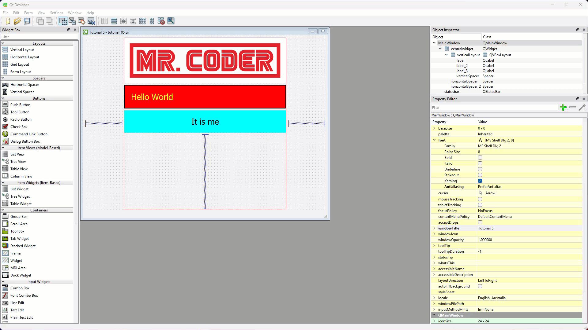
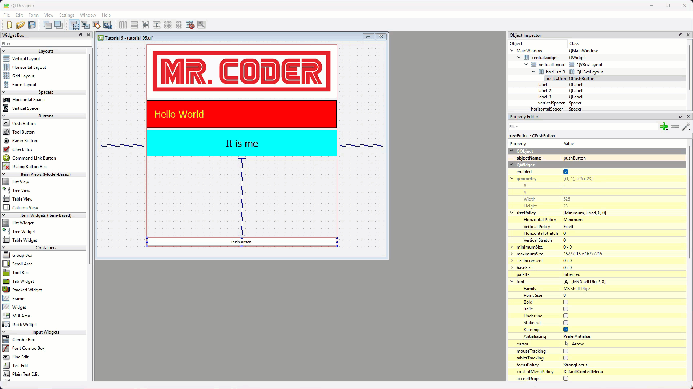
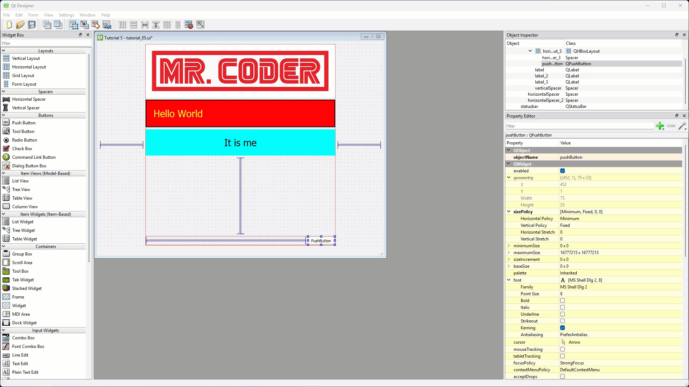
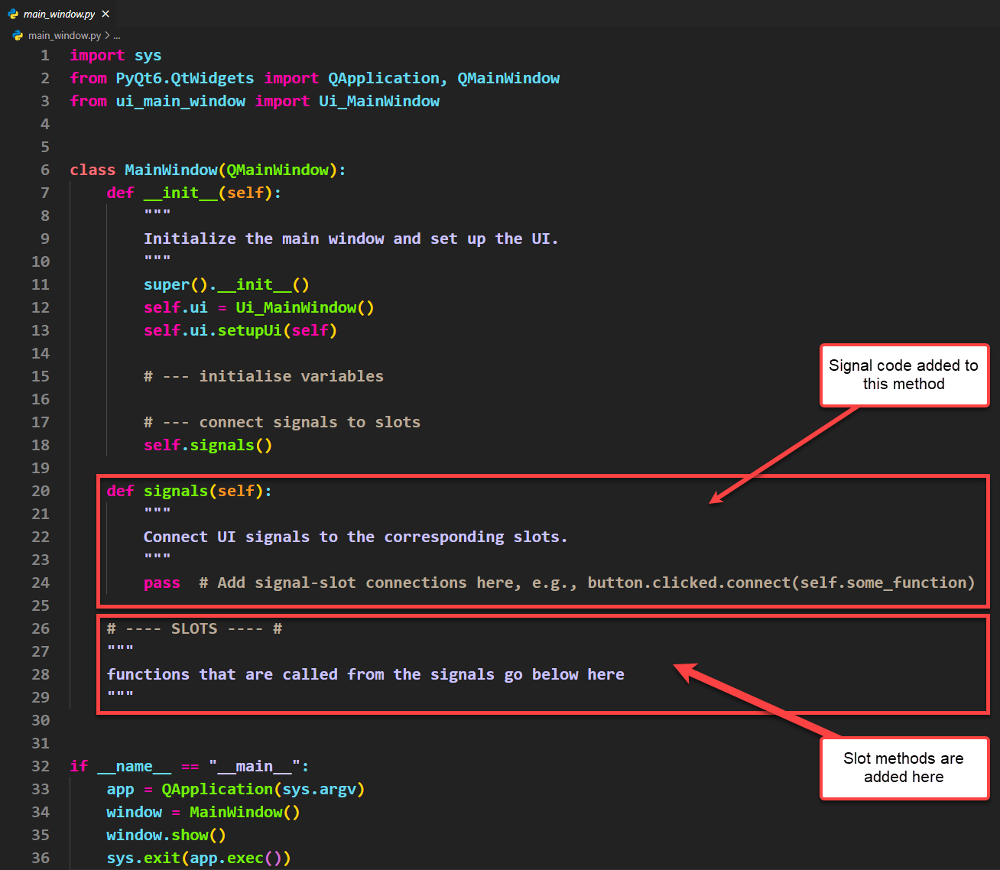
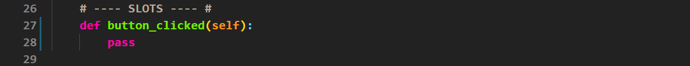
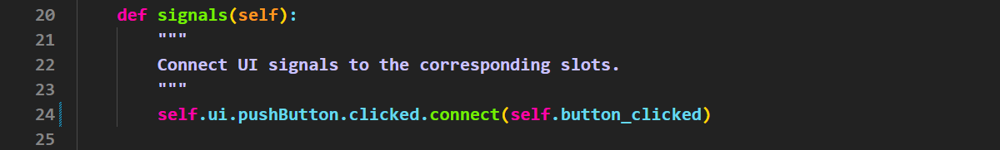
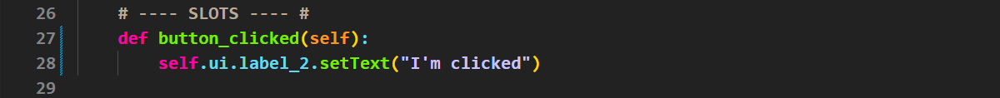
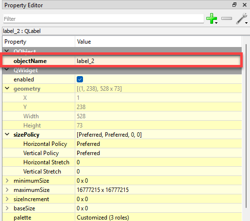

Tutorial 5 - Signals and Slots¶
In this tutorial you will:
add puchButtons to your UI
use QT’s signals and slots process architecture to create an interactive UI
So far out tutorials have been focusing on how to make an responsive UI. While this is an important foundation, all we can do is display information. In this tutorial we will start learning about how to make out UI interactive and respond to the user.
Push Buttons¶
The first input widget that we will explore is the Push Button. It simply registers when a user clicks on it. Push Buttons are probably the most common components in UIs.
Tutorial file¶
Again we will use a previous UI file to introduce the Push Button.
Open tutorial_4.ui (you should find it in File → Recent Forms)
Change windowTitle to Tutorial 5
Save the file as tutorial_5.ui (File → Save As…)
Add a Push Button¶
We want the Push Button to be on the right of the screen, so first we need to add a horizontal layout.
From the Widgets Library, click and drag a Horizontal Layout
Place it at the bottom of the Vertical Layout on the window canvas

We now need add the Push Button, but the Horizontal Layout is compressed. This means we will need to use the Object Inspector.
In the Widgets Library locate and click and drag the Push Button
Drag it over to the Object Inspector onto the Horizontal Layout we just added.

Notice the Push Button expands to fill the available space. We want use a Horizontal Spacer to compress it.
Grab a Horizontal Spacer from the Widgets Library
Drag it to the left of the Push Button

Finally we want to change the text on the Push Button
Double-click on the Push Button then type Click Me
Change the font Point Size to 12

Save the UI file¶
The UI is finished so time to save. Remember, it is important to save the UI file in the same directory (folder) as your main_window.py.
Select Save from the File menu
Convert UI file¶
Now we need to convert the UI file to a Python file, and we will do this in VS Code.
Open VS Code via GitHub Desktop
Check that the tutorial_05.ui file is in your file panel.
Open a new terminal
At the prompt, type
pyuic6 -o ui_main_window.py -x tutorial_05.uiThen press enter.
Time to run the app and check that it all works
Open the main_window.py
Run the code.
Your UI should look the same as below. Notice that all the usual button behaviour is build it:
highlights when you mouse over it
changes colour to indicate a click
But it doesn’t do anything. That’s where the signals and slots come in.
Signals and Slots¶
In Qt, signals and slots are a way for different parts of your program to communicate with each other, like sending messages when something happens. A signal is emitted (sent) when a specific event occurs, such as a button being clicked or a text field being edited. A slot is a function that gets called in response to that signal, allowing you to define what happens next.
In Qt all widgets have signals. Over the course of these tutorials we will explore the most relevant signals for creating intermediate UI. If you want to explore more, then the best place to start is the Qt Documentation.
Both signals and slots have distinct places in the boilerplate code. Strictly speaking, they can go anywhere, but organising code in this way improve its maintainability.

We are going to establish some good programming habits right from the start.
Since signals call a method, it is best to at least create that method’s name so your IDE can suggest it when you type.
Using suggested code
Using the code your IDE suggest can be helpful. It can speed up your coding, but more importantly it can minimise typo errors. Your IDE will suggest names that exist, therefore preventing you from calling incorrect variables and methods.
Copy main_window.py¶
Since we want to reuse the boilerplate code in main_window.py throughout these tutorials, we want to keep a clean version. From now on, for each tutorial, you will need to copy main_window.py and rename it. For this tutorial:
Copy main_window.py
Rename the copied file first_program.py
Create slot¶
The first thing we will do is define a slot for our signal to call. It won’t do anything. It is a place marker for code that we still need to right. We will use the Python pass statement to represent the missing code. It will also prevent your IDE from showing indentation errors due to a missing code block.
In first_program.py
Delete lines 27 - 29
Add the code below

Connect signal¶
Now we need to connect the clicked signal to the slot.
In signals method
Delete line 24
Add the code below

Lets take a second to understand what that line says.

Window name - the name of our MainWindow that we defined in the
__init__Widget name - the name of the widget whose signal will trigger the action.
Signal name - the type of signal that will trigger the action.
Action - the type of action that will be triggered (connect → run a slot method).
Target of action - the slot method that will be run
Complete slot¶
Finally we need to complete the slot. In response to the button being clicked we want to change the text of the label above it.
In the button_clicked method
Delete line 28 →
passAdd the code below

In this code we are changing the text property of label_2.
Widget properties
With PyQt you can programatically change all widget properties. We will look at the most useful ones, but if you want to explore more check out the Qt Documentation.
Testing¶
Save and run your code to check that it works.
Wrong label
If the wrong label changes when you click the button:
open your UI file in QT Designer
click on the label you want to change
check the label name in the Property Editor

then in main_window.py change the name in your code accordingly
Conclusion¶
In this tutorial we learnt how to add Push Buttons, as well as furthered our understanding of nested layouts. We then learnt about Qt’s interactivity mechanism, signals and slots. We connected a signal from the Push Button to a slot that change the text of a label.